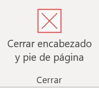
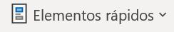

Configuraciones de página
Saltos de linea
-
En Word al escribir un texto hay que teclearlo sin más preocupación. Los saltos de línea se realizan automáticamente
al llegar al margen derecho. Si quieres realizar un cambio de línea, se utiliza la tecla INTRO
(también llamada ENTER o retorno de carro).
-
Word se encarga de que el texto que vas introduciendo se contenga dentro de unos márgenes y pasa a la línea inferior
cuando alcanza el margen derecho. Pero conviene saber que, si algún momento quieres realizar un salto de línea de
forma voluntaria, lo puedes hacer con la combinación de teclas MAYÚS+INTRO.
Saltos de página
Los saltos de página se insertan automáticamente cuando llegamos al margen inferior de una página y seguimos escribiendo.
También se pueden insertar de forma manual si queremos pasar a la página siguiente aunque no hayamos llegado al final,
desde la pestaña Insertar > grupo Páginas > opción Salto de página. 
Observación: En la pestaña Inicio > grupo Párrafo, se cuenta tambien con la herramienta Mostrar todo , la cual permite saber si un texto ha sido dividido en bloques mediante saltos de línea o párrafos.
Si la utilizamos, el documento se llenará de marcas como las que ves en la imagen:
Además de los saltos de línea y los cambios de párrafos también se muestran otros símbolos como un punto medio que señala que hay un espacio separando las palabras, o una marca de salto de página.
Para ocultar de nuevo estas marcas debemos pulsar de nuevo el botón .
Encabezado y pie de pagina
Un encabezado es un texto que se insertará automáticamente al principio de cada página. Esto es útil para escribir textos como, por ejemplo, el título del trabajo que se está escribiendo, el autor, la fecha, etc.
El pie de página tiene la misma funcionalidad, pero se imprime al final de la página, y suele contener los números de página.
Para modificarlos vamos a la pestaña Insertar y entonces hacemos clic en alguno de los dos botones (Pie de página o Encabezado) y seleccionamos la opción Editar.
Se mostrará una nueva pestaña, Herramientas para encabezado y pie de página > Diseño, que contiene los iconos con todas las opciones disponibles:
Observa que ha aparecido el Encabezado delimitado por una línea punteada y con los elementos que lo contienen en modo edición. Ahí podremos teclear el encabezado y, si lo creemos conveniente, insertar numeración de página, fechas o cualquier otro elemento de la barra de herramientas, como vamos a ver a continuación.
Una vez hayamos acabado de editar el encabezado o pie de página finalizaremos haciendo clic en el botón Cerrar encabezado y pie de página, a la derecha de la cinta de opciones .
Mediante estos botones podemos pasar del encabezado al pie y viceversa.
Elementos rápidos
Dentro de esta misma pestaña Diseño del encabezado de página > Grupo Insertar > Elementos rápidos 
Permite, desde la opción Propiedad del documento, escoger distintos elementos de un listado desplegable. En ocasiones esta opción ahorra tiempo ya que permite, por ejemplo, insertar con un sólo clic el autor del documento o la fecha.
La opción de Elementos rápidos también está disponible directamente en la pestaña Insertar, pero se incluye en la de Diseño de los encabezados y pies de página porque es una herramienta muy útil en este tipo de ocasiones. De hecho, el elemento Autotexto es uno de los que más se prestan a la personalización para mejorar la comodidad de la redacción en Word. Así que probablemente lo utilizarás más a menudo desde la pestaña Insertar directamente. Con él podemos insertar rápidamente párrafos completos y demás contenido que solemos repetir constantemente con un sólo clic, como cabeceras o despedidas en las cartas.
Autotexto
Un autotexto es un texto ya preparado que insertamos en nuestro documento con un sólo clic. El texto no está a priori en el documento, sino que encontramos un botón que nos permite incluirlo desde la cinta de opciones.
Esta opción Autotexto la encontraremos en la pestaña Insertar > grupo Texto > Elementos rápidos. Veremos que se despliega un submenú para escoger el que necesitamos. Al hacer clic en él se insertará allí donde tengamos el punto de inserción.
Otras opciones
En la pestaña Diseño también encontraremos el siguiente grupo de opciones:
- Primera página diferenteSi marcamos esta casilla podemos definir un encabezado y pie diferente para la primera página. Esta opción está pensada por ejemplo, para cuando la primera página es la portada del documento y no conviene que aparezca el mismo encabezado o pie con el número de la página.
- Páginas pares e impares diferentes. Si marcamos esta casilla podemos definir un encabezado y pie diferente para las páginas pares e impares. Por ejemplo para imprimir el número de página se imprime a la izquierda en las páginas impares y en las páginas pares imprimirlo a la derecha.
Número de página
Cuando creamos un documento, Word numera las páginas para poder referenciarlas, ese número es el que aparece en la parte izquierda de la barra de estado, pero este número de página no aparece en el documento.
Si queremos que los números de página aparezcan en nuestro documento cuando lo imprimamos deberemos insertarlos desde la pestaña Insertar > grupo Encabezados y pies de página > Número de página y entonces eligir dónde queremos que aparezca el número.
Al seleccionar una ubicación se despliega una lista de formatos prediseñados para que elijamos el que más nos guste. Existe una gran cantidad de formatos prediseñados asociados a cada ubicación, estos están organizados por secciones para facilitarnos la localización del formato que buscamos.
- Simple: Tenemos números simples con diferentes alineaciones.
- Con formas: Los números se escriben dentro de una forma, por ejemplo con cinta.
- Número sin formato: Tenemos los números de página a los cuales se les aplica algún tipo de formato.
- Página x: El número de página viene acompañado de la palabra Página o Pag.
- Pagina x de y: , Se añade además el número total de páginas del documento
Para ver los encabezados y pies de página en la pantalla de nuestro ordenador tenemos que estar en modo vista Diseño de Impresión donde se ven en un tono más claro que el texto normal. Una vez insertado el número de página podemos variar su formato con la opción Formato del número de página. En el menú Formato de número veremos una lista con posibles formatos predeterminados entre los que elegir.
Tenemos dos alternativas para indicar en qué número empezará la numeración de las páginas:
- Continuar desde la sección anterior (o empezar desde uno, si ésta es la primera sección).
- Iniciar en el número que especifiquemos en la opción Iniciar en:
Si tenemos estructurado nuestro documento en capítulos, también podemos incluir el número del capítulo junto con el de la página, marcando la casilla Incluir número de capítulo y seleccionando un formato.
Secciones
Los saltos de sección de Word indican cuándo acaba un determinado apartado o sección. Esto permite que los elementos que comúnmente se aplican a todo el documento por igual, como el pie de página o las tabulaciones, cesen en un determinado punto, para poder configurarlos de forma distinta mas adelante. Puede resultar muy útil para aplicar un formato distinto en las páginas de un mismo documento o bien en distintas zonas de la misma página.
Ejemplos
- Tener una única columna en la primera mitad de la página y dos columnas en la mitad restante.
- Aplicar una numeración de páginas que empezara de nuevo en cada uno de los temas o capítulos.
- Establecer un tamaño de página y orientación distintas en un mismo documento.
- Aplicar márgenes distintos a una página en concreto, independientemente de los establecidos en el documento, etc.
Para incluir un salto de sección en el documento, nos situamos en la ficha Diseño de página > grupo Configurar página
Para eliminar un salto de sección tenemos que realizar lo siguiente:
- Cambiar a la vista Borrador desde la pestaña Vista.
- Situar el cursor en la línea que representa el salto.
- Pulsar la tecla SUPR.